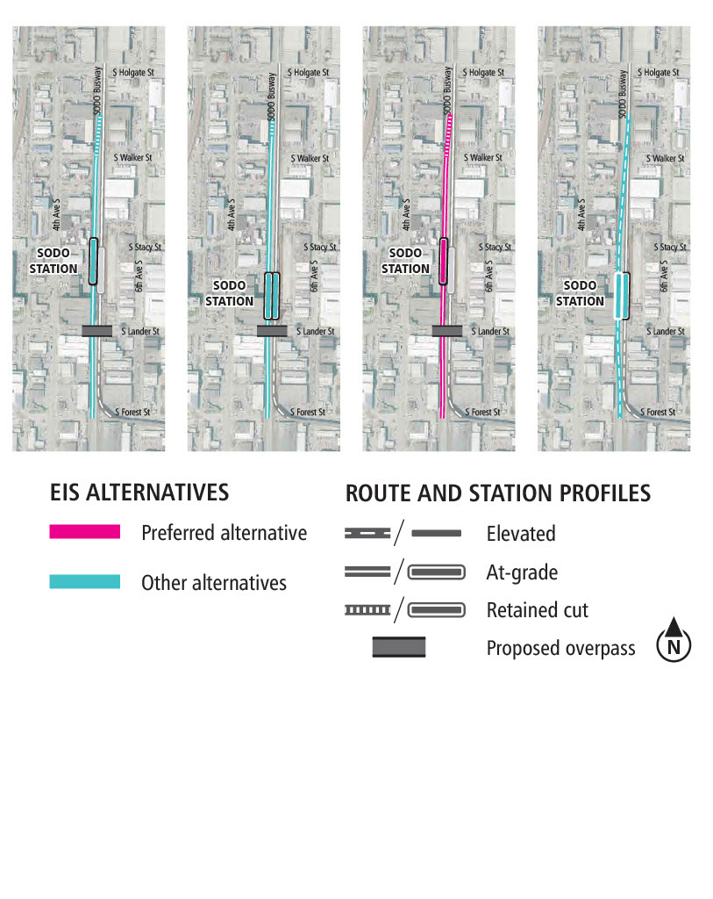

SODO车站
背景介绍
2022年7月，Sound Transit委员会确定了位于SODO区段的与地面齐平或交错车站布局备选方案为首选方案，所纳入的改进措施将改善自站台到South LanderStreet的畅通程度。SODO车站的首选方案是在South Lander Street以北、现有SODO车站的西侧建造一个地面站。本页面提供有关车站首选方案的更多详细信息。我们将继续研究《EIS草案》中分析的所有车站位置，这将包含在预计于2024年年中发布的《EIS终案》中。在公布《EIS终案》之前，Sound Transit委员会将决定即将建设的项目。
- 企业和商业组织支持备选方案SODO-1b，这样SODO车站就更靠近South Lander Street。
- 1号线和3号线站台之间的无缝转乘至关重要。
- 车站的作用应在于激发该区域的活力、促进区域协调发展以及保障区域的安全。
- 应调整优化通往车站的步行路线，尤其是连接车站与大型就业中心的步行路线。
- 保持货运的流动性，尽量避免与其他交通方式的冲突。
- 为当地公交车提质增能，优化区域交通流动性，从而让该车站可以为当地社区居民提供最佳服务。
- 利用艺术、景观和建筑等元素为人们创造空间，同时又充分体现出该地区的工业特色。
- 车站需要宽阔平坦、光线充足，这样就能在保证安全性的同时又能保证能见度。
- South Lander Street和SODO公交专用路需要建设安全的行人通道和自行车过道。
车站页面
选择您想要查看的车站地图及相关信息，或了解有关车站规划的更多信息。
SODO Station首选方案

车站环境的规划如图所示。地面车站位于South Lander Street以北、现有的SODO Station西侧。公车站邻近5th Place South上的车站。上下车站点位于交通环道北侧。

该图以西南倾斜的视角描绘了车站的环境。车站入口（粉红色标识）位于两层，从Lander行车天桥可达上层车站内带夹层；从5th Place South可达东侧地面层。自行车长期存放处（绿色标识）位于地面层，邻近自行车道和车站入口的广场。红色虚线标示的是在车站附近由于建设和运营该项目而征用的土地上存在着的潜在的以交通为导向的开发机会。

图表为项目选址、设计元素和通道概念的近似描绘，仅供参考之用。有关项目效益和影响的更多信息在预计将于2024年年中发布的《环境影响报告终案》中公布。如果您对或将受到影响的地产有任何疑问，请联系项目团队。